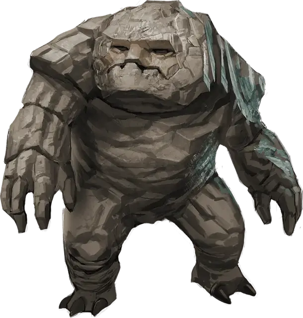

Галеб дур
Galeb Duhr
Средний Элементаль, нейтральный

Класс Доспеха 16 (природный доспех)
Хиты 85 (9к8 + 45)
Скорость 15 футов (30 футов когда катится, 60 футов когда катится по склону)
| мод | спас | ||
|---|---|---|---|
| СИЛ | 20 | +5 | +5 |
| ЛОВ | 14 | +2 | +2 |
| ТЕЛ | 20 | +5 | +5 |
| мод | спас | ||
|---|---|---|---|
| ИНТ | 11 | +0 | +0 |
| МДР | 12 | +1 | +1 |
| ХАР | 11 | +0 | +0 |
Сопротивление урону дробящий, колющий, рубящий от немагических атак
Иммунитет к урону яд
Иммунитет к состояниям паралич, отравление, окаменение, истощение
Чувства тёмное зрение 60 футов, чувство вибрации 60 футов, пассивное Восприятие 11
Языки Терран
Опасность 6 (2300 опыта)
Бонус мастерства +3
Среда обитания Горы, Холмы
Особенности
Обманчивая внешность. Пока галеб дур остаётся без движения, он неотличим от обычного валуна.
Катящаяся атака в броске. Если галеб дур прокатится как минимум 20 футов по направлению к цели, а затем в том же ходу попадёт по ней атакой размашистым ударом, цель получает от атаки дополнительный 7 (2к6) дробящего урона. Если цель — существо, она должна преуспеть в спасброске Силы Сл 16, иначе будет сбита с ног.
Действия
Размашистый удар. Рукопашная атака оружием: +8 к попаданию, досягаемость 5 футов, одна цель. Попадание: 12 (2к6+5) дробящего урона.
Оживление валунов (1/день). Галеб дур магическим образом оживляет до двух валунов, которые видит в пределах 60 футов от себя. Валун обладает статистикой галеб дура, за исключением того, что у него Интеллект 1 и Харизма 1, его нельзя очаровать и испугать, и у него нет этого варианта действия. Валун остаётся живым, пока галеб дур сохраняет концентрацию, вплоть до 1 минуты (как при концентрации на заклинании).
Описание
Галеб дур — существо, похожее на валун с массивными выступами, которые используются как руки и ноги. Он способен оживлять находящиеся рядом с ним камни, и обычно встречается в горной местности.
Могущественная магия позволяет заклинателям призывать галеб дура с Плана Земли, хотя некоторые из них могут появиться и без помощи магии — в тех местах, что соприкасаются с этим планом. По сравнению с другими элементалями, галеб дур обладает большим интеллектом, что позволяет ему лучше оценивать степень угрозы и вступать в диалог с существами, зашедшими на охраняемую им территорию.
Каменный страж. Галеб дур не стареет, не ест и не пьёт, что делает его великолепным охранником. Могущественный друид может поручить ему охрану каменного круга или священного холма. Другой галеб дур может быть создан для охраны подземной гробницы или башни волшебника. По своему усмотрению он может принять облик обычного валуна и находиться в нём годами.
Галеб дур навечно связан с Материальным Планом, поэтому после смерти не возвращается на План Земли. У него великолепная память, и он всегда рад поделиться информацией о местности с существами, которых не расценивает как угрозу.
Связь с камнем. Галеб дур способен слиться воедино с землёй вокруг себя, что позволяет ему наполнить близлежащие камни и валуны неким подобием жизни. Он использует оживлённые камни, чтобы отпугивать чужаков и защищать то, что ему поручено. Чтобы приблизиться к нарушителям, он прижимает конечности к телу и с бешеной скоростью катится вперёд.